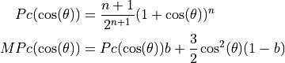

xopto.mcbase.mcpf.mpc module¶
- class MPc(n: float, b: float)[source]¶
Bases:
xopto.mcbase.mcpf.pfbase.PfBaseModified power of cosines scattering phase function.

- Parameters
n (float) – Parameter of the power of cosine scattering phase function.
b (float) – Contribution of the Rayleigh scattering component defined as (1 - b).
- property b: float¶
Contribution of the power of cosine scattering phase function.
- static cl_declaration(mc: xopto.mcbase.mcobject.McObject) → str[source]¶
OpenCL declarations of the scattering phase function.
- static cl_implementation(mc: xopto.mcbase.mcobject.McObject) → str[source]¶
OpenCL implementation of the scattering phase function.
- cl_pack(mc: xopto.mcbase.mcobject.McObject, target: Optional[xopto.cl.cltypes.Structure] = None) → xopto.cl.cltypes.Structure[source]¶
Fills the an OpenCL Structure (target) with the data required by the Monte Carlo simulator. See the
cl_type()method for a detailed list of fields.- Parameters
mc (McObject) – Simulator instance.
target (cltypes.Structure) – Target OpenCL structure for packing.
- Returns
target – Target structure received as an input argument or a new instance of ClMPc if the input argument target is None.
- Return type
- static cl_type(mc: xopto.mcbase.mcobject.McObject) → xopto.cl.cltypes.Structure[source]¶
Returns an OpenCL structure that can be passed to the Monte carlo simulator.
- Parameters
mc (McObject) – A Monte Carlo simulator instance.
- Returns
struct (cltypes.Structure) – A structure type that represents the scattering phase function in the Monte Carlo kernel.
Structure fields
—————-
n (mc_fp_t) – Power of the cosine.
beta (mc_fp_t) – Contribution of the power of cosine scattering phase function.
- property n: float¶
Power of cosine.